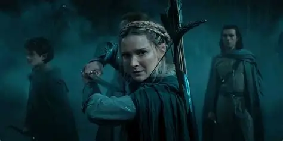

Temporadas y episodios
Temporada 1 (2022):Estrenada el 2 de septiembre de 2022, con 8 episodios. Presenta el despertar de la sombra en la Tierra Media y los primeros pasos hacia la forja de los Anillos de Poder..
Episodio 1 - La sombra del pasado
Episodio 2 - A la deriva
Episodio 3 - Adar
Episodio 4 - La gran ola
Episodio 5 - Despedidas
Episodio 6 - Udun
Episodio 7 - El ojo
Episodio 8 - Aleación

Temporada 2 (2024):Estrenada entre el 29 de agosto y el 3 de octubre de 2024 en Prime Video. También compuesta por 8 episodios, desarrolla la ascensión de Sauron y la creciente amenaza que representa para todos los pueblos.
Episodio 1 - Reyes elfos bajo el cielo
Episodio 2 - Donde las estrellas son extrañas
Episodio 3 - El águila y el cetro
Episodio 4 - El antiguo
Episodio 5 - Palacios de piedra
Episodio 6 - ¿Dónde está él?
Episodio 7 - Condenados a morir
Episodio 8 - Sombra y fuego
